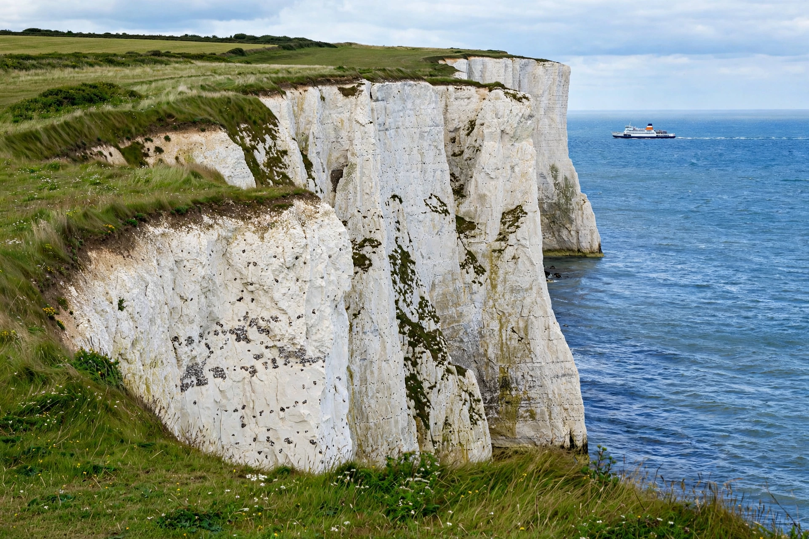

[Image placeholder: The White Cliffs of Dover]| Country | England, United Kingdom |
|---|---|
| County | Kent |
| Population | About 31,000 (town) |
| Known for | White Cliffs; busiest ferry port in the UK |
**Dover** is a town and major ferry port in Kent, South East England, facing France across the Strait of Dover — at 33 km the narrowest part of the English Channel, making Dover the closest English port to mainland Europe. The Port of Dover is among the world's busiest passenger ports, and the town is symbolised by the White Cliffs of Dover, chalk cliffs that are an icon of homecoming and wartime resolve.
Dover Castle, 'the Key to England', was founded in the 11th–12th centuries (with a Roman lighthouse in its grounds — Roman Dubris was a major port). During the Second World War the castle's tunnels housed the command that organised the 1940 Dunkirk evacuation, and Hellfire Corner endured cross-Channel shelling.
Ferries to Calais and Dunkirk, the nearby Channel Tunnel terminal at Folkestone, and hovercraft (until 2000) have made Dover Britain's front door. Post-Brexit border checks have periodically caused long lorry queues on the A20/M20 approach roads.
The town sits in a valley of the River Dour between chalk downs. The cliffs, of Cretaceous chalk with bands of flint, are eroding gradually; a major fall can reshape the coastline. The Samphire Hoe country park was created from Channel Tunnel spoil.